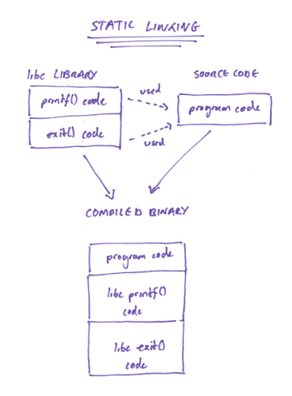
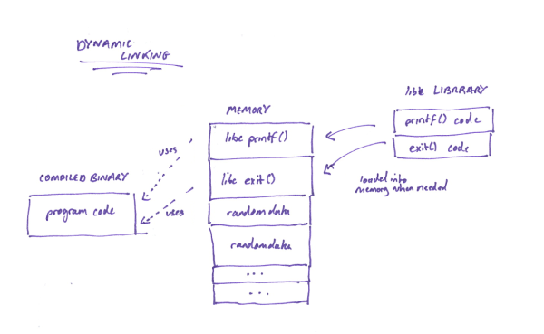

# Linux - ELF - Linking
When you use functions from libraries or other files, these functions have to be linked to your compiled executable in some way.
Take, for example, this C program.
#include <stdio.h>
int main() {
printf("Hey :)\nI'm exiting now...");
exit(0);
return 0;
}
2 functions from the
libc library have been used -
printf() and
exit().
Because these are functions from a library (not ones you've written yourself), these functions have to be linked to your compiled executable/ELF file in order to be used.
There are 2 type of linking -
static and
dynamic.
## Static Linking
Static linking is where the all the library code needed to run the
printf() and
exit() functions are contained within your compiled binary.
Advantages• Makes the binary totally portable (all code required from libraries etc. is compiled into the ELF binary, not using system libraries)
• Fast (because the library functions are locally available/you don't have look up the memory address of library functions when you need them)
Disadvantages• Large files sizes (because you're including your code + library code)
Diagram## Dynamic Linking
Dynamic linking is much more common.
Dynamic linking is where the required libraries get loaded into memory when the binary is run, rather than being written into the ELF file on compilation.
You can see the libraries that will be dynamically linked and their base address using
lddldd my_binary.elfIn the Symbol Table, the
.dynsym section contains information on symbols from external files (variables, functions etc.) that are dynamically linked.
Advantages• Smaller file sizes (because all the extra library code isn't being inluded in the final executable)
• The library can receive updates and you can reap the benefits of those updates without having to recompile your binary
Disadvantages• Slow (have to look up the location of the functions in the shared libraries when you need to run that function)
• Not reliably portable (a copy of the library the binary is using must be available on the system)
DiagramDiagram showing libraries being loaded into memory rather than the ELF file itself